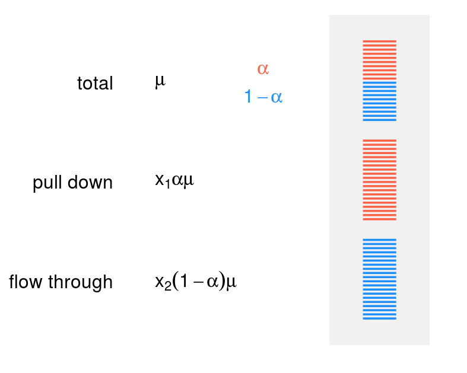
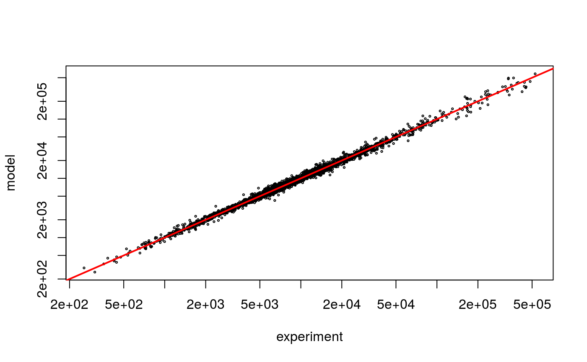
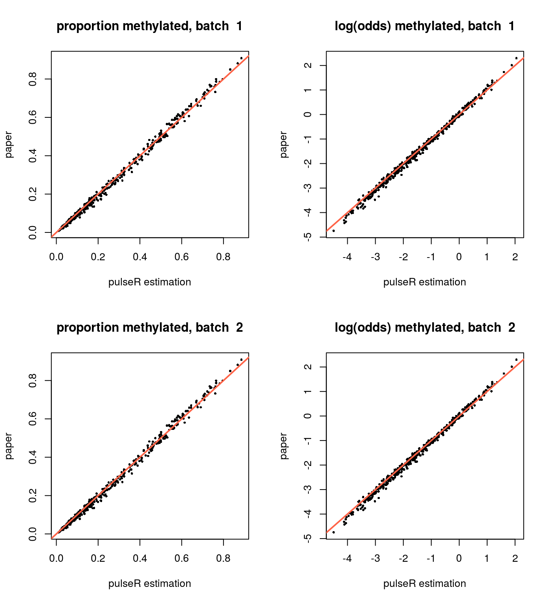
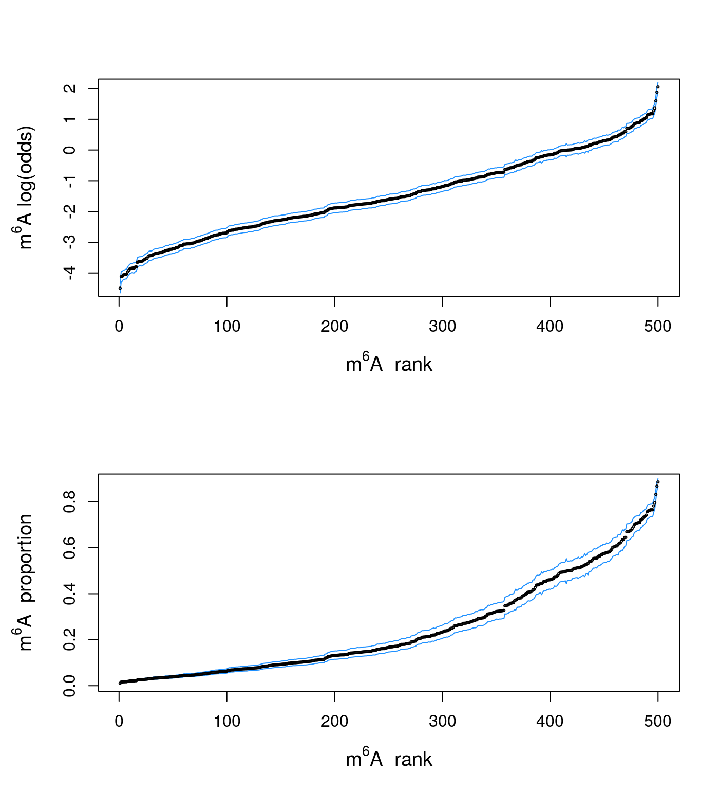
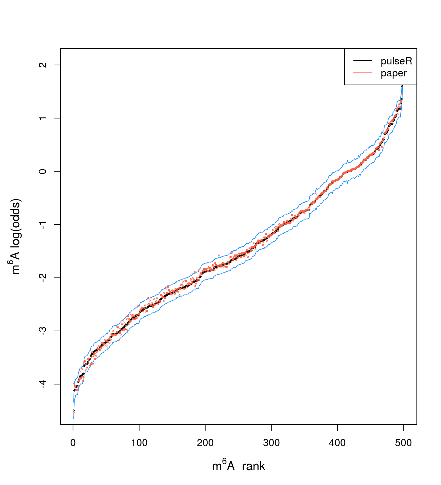

vignettes/epitranscriptomics.Rmd
epitranscriptomics.RmdThe pulseR package may be adapted for analysis of experimental approaches, which are similar to the metabolic labelling in having several related fractions. For example, RNA modification level can be measured on the basis of immunoprecipitation (IP) using antibodies against of modified nucleotisides, e.g. anti-m\(^6\)A or anti-m\(^5\)C IgG.
Here we consider an example of the LAIC-seq approach, published here
Molinie, Benoit, et al. “m(6)A-LAIC-seq reveals the census and complexity of the m(6)A epitranscriptome.” Nature methods 13.8 (2016): 692.
The data consists of three fractions:
Since during library preparation, usually the probes are normalised to the same amount (e.g. 100ng), it is important to recover the original relation between the pull-down, flow-through and the total fractions. One may whether
The task of normalisation and the model fitting can be illustrated with the following figure:

Considering the total sample as a reference, with denote the expression level of a given gene as \(\mu\). Then if \(\alpha\) is proportion of modified molecules (a value between 0 and 1), the amount of the modified molecules in the total sample is \(\alpha\mu\) and amount of the nonmodified molecules is \((1 - \alpha)\mu\).
However, normalisation of material for library preparation affects the expected read counts in both fractions, and the task is to recover additional normalisation factors \(x_1\) and \(x_2\) (see figure), in such a way, that the read counts can be explained by the model. The coefficients \(x_1\) and \(x_2\) are shared between all the genes, and the expression level and modification level are gene-specific.
Thanks to the authors, the paper is accompanied by the supplementary count table, which makes reproducibility much easier. In this subsection, preliminary steps for data preparation are discussed. Download the table with read counts and results from the publisher’s site:
library(openxlsx)
dataURL <- "https://media.nature.com/original/nature-assets/nmeth/journal/v13/n8/extref/nmeth.3898-S2.xlsx"
laicSeqData <- read.xlsx(dataURL)Prepare the condition table and the count table:
counts <- laicSeqData[, -(1:10)]
rownames(counts) <- laicSeqData$Gene_ID
conditions <- do.call(rbind, strsplit(names(counts), "_"))
conditions <- data.frame(conditions[,3:1], stringsAsFactors = FALSE)
names(conditions) <- c("fraction", "run", "cells")
conditions$sample <- names(counts)
conditions$fraction <- c(
"input" = "total",
"elu" = "pull-down",
"sup" = "flow-through")[conditions$fraction]
## In this example we use only the "GM" cells data set
cellTypeIndex <- conditions$cells == "GM"
byFraction <- order(conditions$fraction[cellTypeIndex], decreasing = TRUE)
counts <- counts[, cellTypeIndex][,byFraction]
conditions <- conditions[cellTypeIndex,][byFraction,]
knitr::kable(conditions, row.names = FALSE)| fraction | run | cells | sample |
|---|---|---|---|
| total | sp1 | GM | GM_sp1_input_pairs |
| total | sp2 | GM | GM_sp2_input_pairs |
| pull-down | sp1 | GM | GM_sp1_elu_pairs |
| pull-down | sp2 | GM | GM_sp2_elu_pairs |
| flow-through | sp1 | GM | GM_sp1_sup_pairs |
| flow-through | sp2 | GM | GM_sp2_sup_pairs |
The count table looks like
| GM_sp1_input_pairs | GM_sp2_input_pairs | GM_sp1_elu_pairs | GM_sp2_elu_pairs | GM_sp1_sup_pairs | GM_sp2_sup_pairs | |
|---|---|---|---|---|---|---|
| ENSG00000167634 | 103 | 140 | 43 | 42 | 143 | 201 |
| ENSG00000104951 | 2951 | 3823 | 5929 | 5244 | 2521 | 4282 |
| ENSG00000116096 | 112 | 130 | 153 | 172 | 87 | 150 |
| ENSG00000137496 | 741 | 787 | 1350 | 1145 | 476 | 578 |
| ENSG00000123933 | 398 | 536 | 281 | 263 | 456 | 681 |
| ENSG00000266728 | 747 | 810 | 738 | 597 | 756 | 724 |
There are several ways to report the methylation level:
Out of these three parameters, only the log(odds) is symmetrical in respect to the modified and unmodified molecules quantities. If, for example, the level of modification increases from 80% to 90%, it is only a mild change in the proportion (1.125-fold), but the amount of nonmodified molecules decreased from 20% to 10%, which is 2-fold decrease. Hence, the extent of the difference depends on the molecule type, we are considering.
In contrast, if we swap the labels of the molecules in the log(odds), it results only in change of the sign, but not the absolute value:
lor <- function(a) log(a/(1 - a))
lor(.9) - lor(.8) # change from 80% to 90%
#> [1] 0.8109302
lor(.1) - lor(.2) # change from 20% to 10%
#> [1] -0.8109302It is always good to keep gene-specific parameters at the same scale, since currently the stopping criteria for fitting depends on the absolute changes in parameter values between iterations. That it is why, if the log(odds) is used, it is better to describe the expression level at the logarithmic scale, i.e. mean read count is \[\text{[total]} = e^{\mu}\] and the amount of modified molecules is \[\text{[modified]} = e^{\mu + \gamma} / (1 + e^{\gamma}).\]
In this workflow, we use the parametrisation based on the log(odds). To have parameters of similar scale, the expression level is modelled at the logarithmic scale, i.e. mean read count in the total fraction is exp(mu).
To use the pulseR package, we need to define these formulas and describe, how the read counts in different conditions are related to the formulas:
library(pulseR)
formulas <- MeanFormulas(
total = exp(mu),
modified = exp(y + mu) / (1 + exp(y)),
nonmodified = exp(mu) / (1 + exp(y))
)
formIndexes <- list(
"total" = "total",
"pull-down" = "modified",
"flow-through" = "nonmodified"
)It is important to note, that here we neglect cross-contamination, as in the paper it was experimentally shown, that the purification procedure is very efficient, which results in high quality separation.
Alternatively, one may use spike-ins for estimation of the cross-contamination levels and relation of fractions to each other.
To keep computations light, we use only highly expressed genes, using mean read count in the total fraction for filtering:
expressionRank <- rank(
-rowMeans(counts[, conditions$fraction == "total"]))
highExp <- expressionRank < 501Now we prepared everything for the PulseData object initialisation:
pd <- PulseData(counts = counts[highExp,],
conditions = conditions[, 1, drop = FALSE],
formulas = formulas,
formulaIndexes = formIndexes,
groups = ~fraction)The model is fitted using the optimisation routine “L-BFGS-B”, which requires boundaries for the parameters. In this case, there are following parameters to fit:
lbNormFactors <- list(
"total" = .1,
"pull-down" = .1,
"flow-through" = .1
)
ubNormFactors <- list(
"total" = 2e1,
"pull-down" = 2e1,
"flow-through" = 2e1
)
opts <- setBoundaries(list(
mu = log(c(.1, 1e8)),
y = c(-5,5),
size = c(.1,1e6)),
normFactors = list(lbNormFactors, ubNormFactors)
)
## Set stopping criteria for fitting:
## absolute difference between iterations must be not higher than 0.1 for
## the parameters (mu and y) and the normalisation factors
opts <- setTolerance(params = .1,
options = opts,
normFactors = .1,
logLik = 1 # minimal absolute difference for the logLikelihood
)
opts$verbose <- "silent"
opts$resultRDS <- NULL # a path to save the result after every iteration
opts$cores <- 3To start model fitting, it can be beneficial to initialise the parameters close to their expected values: for example, the parameter mu must be near the logarithm of the read counts in the total fractions.
The normalisation factors will be fitted as well, except for the very first item: it is the reference for all other samples and will be fixed to 1 identifiability.
# create a list of needed structure and then adjust the values
pars <- initParameters(list(), c("mu", "y"), pd, opts)
pars$mu <- log(pd$counts[, 1] + 1)
pars$y[] <- 0 # corresponds to 50% methylation
pars$size <- 1000
pars$normFactors[[2]] <- 2
pars$normFactors[[3]] <- 2
## look inside the initial guess
str(pars)
#> List of 4
#> $ mu : Named num [1:500] 8.57 9.39 8.66 8.63 9.14 ...
#> ..- attr(*, "names")= chr [1:500] "ENSG00000171992" "ENSG00000245532" "ENSG00000258486" "ENSG00000175265" ...
#> $ y : num [1:500] 0 0 0 0 0 0 0 0 0 0 ...
#> $ size : num 1000
#> $ normFactors:List of 3
#> ..$ : num 5.91
#> ..$ : num 2
#> ..$ : num 2Finally, run the fitting using the initial values, options and the data provided:
result <- fitModel(pd, pars, opts)We may compare how the model prediction and the raw counts relate to each other, using the predictExpression function:
pr <- predictExpression(result, pd)
plot(as.vector(pd$counts) + .5,
as.vector(pr$predictions) + .5,
log='xy',
cex = .3,
xlab = "experiment",
ylab = "model")
abline(0,1,col = 2, lwd = 2)
In addition, in the paper supplementary the estimations for the methylation levels are available for two experiment repetitions. It is interesting to compare the pulseR estimations based on the both repetitions and the estimations from the paper.
Since we use only a subset of the data and a different way to normalise the fractions, it affects the estimations of the methylation level, hence a global bias between these two results can be observed, i.e. estimations will be shifted to higher or lower values. It complicates comparison of the results from, for example, different studies, and further development is needed in order to tackle this problem.
paperResults <- laicSeqData[highExp,c(1,6,7)]
head(paperResults)
#> Gene_symbol GM_sp1_m6A_level GM_sp2_m6A_level
#> 12 SYNPO 0.4965471 0.5406506
#> 56 NEAT1 0.7849989 0.7952290
#> 60 RN7SL1 0.3111133 0.3156488
#> 122 GOLGA8A 0.5621528 0.5491124
#> 204 MACF1 0.5904389 0.5557059
#> 218 MAP4 0.6212910 0.6074293or2alpha <- function(or) exp(or) / (1 + exp(or))
par(mfrow = c(2,2))
plotCompare <- function(...) {
plot(cex = .5, pch = 16, ...)
abline(0, 1, col = "tomato", lwd = 2)
}
for(i in 1:2) {
plotCompare(or2alpha(result$y), paperResults[,2],
xlab = "pulseR estimation",
ylab = "paper",
main = paste("proportion methylated, batch ", i))
plotCompare(result$y, lor(paperResults[,2]),
xlab = "pulseR estimation",
ylab = "paper",
main = paste("log(odds) methylated, batch ", i))
}
In addition to the estimations, one usually is interested to have confidence intervals for making inference about the parameter values, for example, to compare between different conditions.
The function ciGene allows to estimate CI for the gene specific parameters. In this case, uncertainty from the normalisation factors is neglected and the profile of the likelihood is computed assuming the normalisation factors and the size parameter to be fixed.
opts$replicates <- 3
cis <- ciGene(parName = "y",
geneIndexes = seq_along(result$y),
par = result,
pd = pd,
options = opts,
interval = c(-5, 5),
confidence = .95
)Here we gather the results into a data.frame and plot the confidence intervals and the estimated values. The genes are sorted by their m6A level:
dat <- data.frame(
y = result$y,
mu = result$mu,
y.min = cis[,1],
y.max = cis[,2]
)
dat$paperAvg <- rowMeans(paperResults[,2:3])
dat$lor.paperAvg <- lor(dat$paperAvg)
par(mfrow = c(2,1), mar = c(5,5,4,2))
o <- order(dat$y)
i <- seq_along(dat$y)
plot(x = i, y = dat$y[o], type = "n",
xlab = expression(paste(m^6, A, " rank")),
ylab = expression(paste(m^6, A, " log(odds)")),
cex.lab = 1.2
)
lines(x = i, y = dat$y.max[o], col = "dodgerblue")
lines(x = i, y = dat$y.min[o], col = "dodgerblue")
points(x = i, y = dat$y[o], cex = .3)
plot(x = i, y = or2alpha(dat$y[o]), type = "n",
xlab = expression(paste(m^6, A, " rank")),
ylab = expression(paste(m^6, A, " proportion")),
cex.lab = 1.2
)
lines(x = i, y = or2alpha(dat$y.max[o]), col = "dodgerblue")
lines(x = i, y = or2alpha(dat$y.min[o]), col = "dodgerblue")
points(x = i, y = or2alpha(dat$y[o]), cex = .3)
As it was mentioned before, the normalisation may have high influence on the estimated values, which can shift the absolute values to higher or lower values, although the ranking is much less affected. To illustrate how estimations compare to each other, I add to the previous plot the average of the two estimations from the paper (red dots):
par(mar = c(5,5,4,2))
plot(x = i, y = dat$y[o], type = "n",
xlab = expression(paste(m^6, A, " rank")),
ylab = expression(paste(m^6, A, " log(odds)")),
cex.lab = 1.2
)
lines(x = i, y = dat$y.max[o], col = "dodgerblue")
lines(x = i, y = dat$y.min[o], col = "dodgerblue")
points(x = i, y = dat$y[o], cex = .3)
points(x = i, y = dat$lor.paperAvg[o], cex = .3, col = "tomato")
legend("topright", legend = c("pulseR", "paper"), col = c("black", "tomato"),
lty = 1)
sessionInfo()
#> R version 3.4.0 (2017-04-21)
#> Platform: x86_64-pc-linux-gnu (64-bit)
#> Running under: Ubuntu 16.04.5 LTS
#>
#> Matrix products: default
#> BLAS: /usr/lib/openblas-base/libblas.so.3
#> LAPACK: /usr/lib/libopenblasp-r0.2.18.so
#>
#> locale:
#> [1] LC_CTYPE=en_US.UTF-8 LC_NUMERIC=C
#> [3] LC_TIME=de_DE.UTF-8 LC_COLLATE=en_US.UTF-8
#> [5] LC_MONETARY=de_DE.UTF-8 LC_MESSAGES=en_US.UTF-8
#> [7] LC_PAPER=de_DE.UTF-8 LC_NAME=C
#> [9] LC_ADDRESS=C LC_TELEPHONE=C
#> [11] LC_MEASUREMENT=de_DE.UTF-8 LC_IDENTIFICATION=C
#>
#> attached base packages:
#> [1] stats graphics grDevices utils datasets methods base
#>
#> other attached packages:
#> [1] pulseR_1.0.2
#>
#> loaded via a namespace (and not attached):
#> [1] Rcpp_0.12.19 knitr_1.20 xml2_1.2.0
#> [4] magrittr_1.5 roxygen2_6.1.0 MASS_7.3-50
#> [7] R6_2.3.0 rlang_0.2.2 stringr_1.3.1
#> [10] highr_0.7 tools_3.4.0 htmltools_0.3.6
#> [13] commonmark_1.6 yaml_2.2.0 rprojroot_1.3-2
#> [16] digest_0.6.18 assertthat_0.2.0 pkgdown_1.1.0.9000
#> [19] crayon_1.3.4 fs_1.2.6 memoise_1.1.0
#> [22] evaluate_0.12 rmarkdown_1.10 stringi_1.2.4
#> [25] compiler_3.4.0 desc_1.2.0 backports_1.1.2